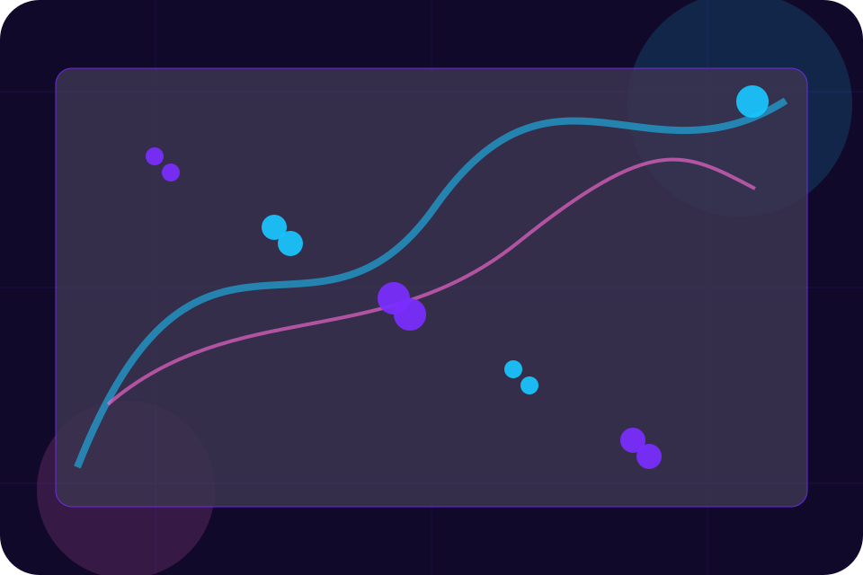
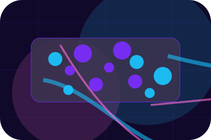
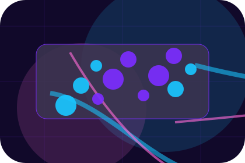
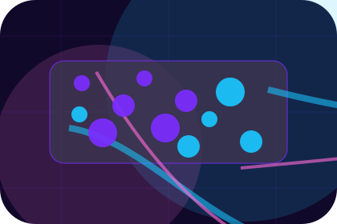
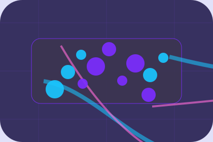

Start
How visitors begin this route and what detail is useful at the first step.
Pricing / 01
Pricing opens as a clear cybersecurity decision hub: what Cipher offers, who it helps, why it matters, and which route to take first.
The first screen combines positioning, proof, primary action, and fast internal navigation, so people can act immediately or compare the rest of the pricing route with context.
Purple cloud-risk hero
Select the closest route and Cipher keeps the next step, proof, and follow-up expectation aligned with privacy and threat reduction.

Pricing / 02
Audits explains the operating sequence so visitors can see how the first request becomes a clear recommendation and follow-up.
The steps are written from the visitor side: what they do first, what Cipher clarifies, what they receive, and how support continues.
Explore Pricing

How visitors begin this route and what detail is useful at the first step.
Pricing / 03
Retainers makes commercial comparison easier by showing fit, scope, and terms before cybersecurity visitors ask for the next step.
The layout keeps price-sensitive decisions honest: it separates starting scope, fuller delivery, and ongoing support so the visitor can ask a sharper question.
Explore PricingWho the offer is for, which scope it suits, and when a different route may be better.
What is included clearly enough for cybersecurity, privacy & risk protection visitors to compare value without hidden jargon.
The practical details that should be confirmed before someone asks to request an audit.
Pricing / 04
Response makes commercial comparison easier by showing fit, scope, and terms before cybersecurity visitors ask for the next step.
The layout keeps price-sensitive decisions honest: it separates starting scope, fuller delivery, and ongoing support so the visitor can ask a sharper question.
Explore PricingWho the offer is for, which scope it suits, and when a different route may be better.
What is included clearly enough for cybersecurity, privacy & risk protection visitors to compare value without hidden jargon.
The practical details that should be confirmed before someone asks to request an audit.
Pricing / 05
Training explains the operating sequence so visitors can see how the first request becomes a clear recommendation and follow-up.
The steps are written from the visitor side: what they do first, what Cipher clarifies, what they receive, and how support continues.
Explore PricingCipher structures training around start, clarify, and a clear next route so visitors can compare the block quickly before they request an audit.
Request AuditPricing / 07
Deliverables makes commercial comparison easier by showing fit, scope, and terms before cybersecurity visitors ask for the next step.
The layout keeps price-sensitive decisions honest: it separates starting scope, fuller delivery, and ongoing support so the visitor can ask a sharper question.
Explore PricingWho the offer is for, which scope it suits, and when a different route may be better.
What is included clearly enough for cybersecurity, privacy & risk protection visitors to compare value without hidden jargon.

The practical details that should be confirmed before someone asks to request an audit.
Pricing / 08
Comparison makes commercial comparison easier by showing fit, scope, and terms before cybersecurity visitors ask for the next step.
The layout keeps price-sensitive decisions honest: it separates starting scope, fuller delivery, and ongoing support so the visitor can ask a sharper question.
Explore PricingWho the offer is for, which scope it suits, and when a different route may be better.
What is included clearly enough for cybersecurity, privacy & risk protection visitors to compare value without hidden jargon.
The practical details that should be confirmed before someone asks to request an audit.
Pricing / 09
Terms makes commercial comparison easier by showing fit, scope, and terms before cybersecurity visitors ask for the next step.
The layout keeps price-sensitive decisions honest: it separates starting scope, fuller delivery, and ongoing support so the visitor can ask a sharper question.
Explore PricingWho the offer is for, which scope it suits, and when a different route may be better.
What is included clearly enough for cybersecurity, privacy & risk protection visitors to compare value without hidden jargon.
The practical details that should be confirmed before someone asks to request an audit.
Pricing / 10
Cipher closes the pricing route with a clear action, a quick reminder of the value, and a low-friction way to request an audit.
Visitors who are ready can use the primary action. Visitors who are still comparing can scan the section links, proof, and support routes before they request an audit.
Request AuditThe final block keeps the choice simple: act now, compare one more proof route, or send enough detail for a focused response.
Request Auditprivacy and threat reduction
A cloud-risk command site with neon topology, rounded security modules, compliance proof, and audit routing. Pricing ends with a direct path to request an audit, plus enough context for visitors who still need to compare.

Request AuditInformation is provided for planning and should be reviewed for the final client, location, and operating rules.